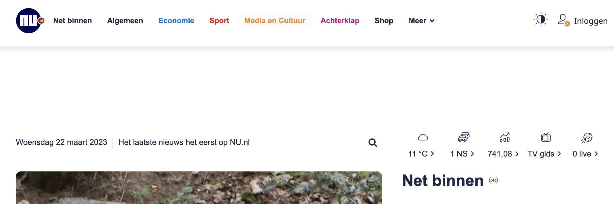
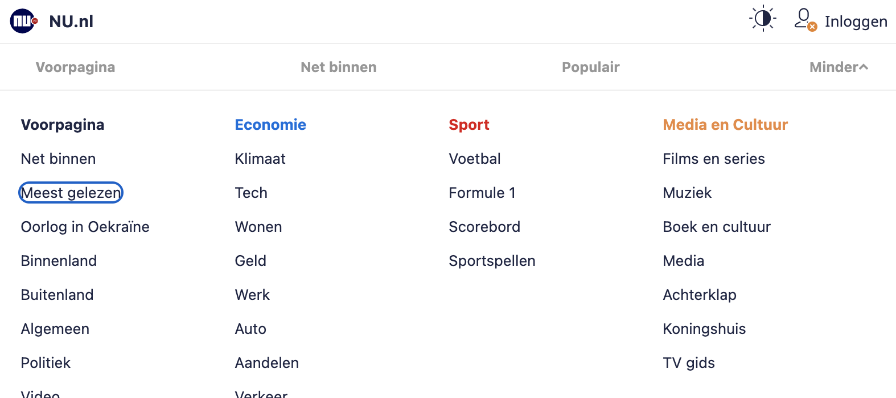

Als de gebruiker niet de mogelijkheid heeft om een muis of trackpad te gebruiken dan moet er een alternatief zijn. Dit is vaak het toetsenbord, maar dit moet dan wel goed werken.
1. Problemen die deze features kunnen veroorzaken
- Sommige gebruikers zouden je webpagina niet meer kunnen gebruiken.
- Je helpt ook mensen met een muis door focus states toe te voegen.
2. Hoe zou je dit kunnen testen
- De beste manier om dit te testen is om je muis aan de kant te leggen en je website proberen te navigeren met alleen je toetsenbord.
3. Websites waar dit ook problemen oplevert
- Nu.nl
Op nu.nl kan je de tab toets gebruiken om te navigeren, maar je komt uiteindelijk uit in het menu. Dit is niet wat je wilt, want nu moet je het hele menu door.
 4. Hoe kunnen wij dit oplossen
Nu.nl zou het dropdown menu kunnen verbergen zodat de gebruiker niet door dat menu heen hoeft, maar ook focus states duidelijker maken.
Opties die je hebt als je alleen maar met een toetsenbord kan navigeren zijn:
- TAB - Om verder te gaan in de pagina.
- Shift + TAB - Om terug te gaan in de pagina.
- Space - Kan ook gebruikt worden om op een knop te drukken of te scrollen
- Enter - Om iets te kunnen drukken
- Arrow keys - Gebruikt om dingen te selecteren (Bijvoorbeeld in een dropdown) of te scrollen
Met de tab toets kan je eigenlijk dus verder en terug navigeren tussen de focus states. Het kan dus mis gaan als mensen de focus state zouden weg halen bij bijvoorbeeld een input. Normaal is dit geen probleem omdat een focus state default is bij a, buttons, details, inputs, select en textarea .
Om een HTML element focusable te maken kan je een tabindex toevoegen in je HTML.